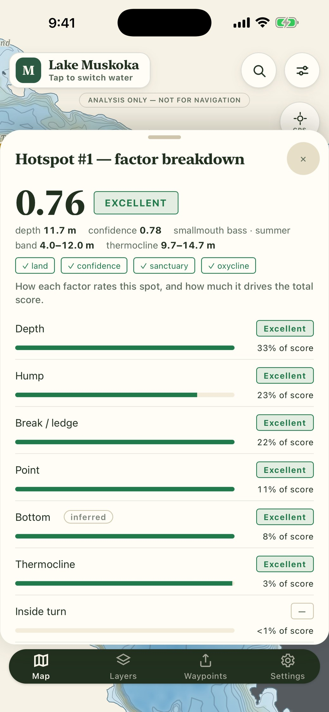
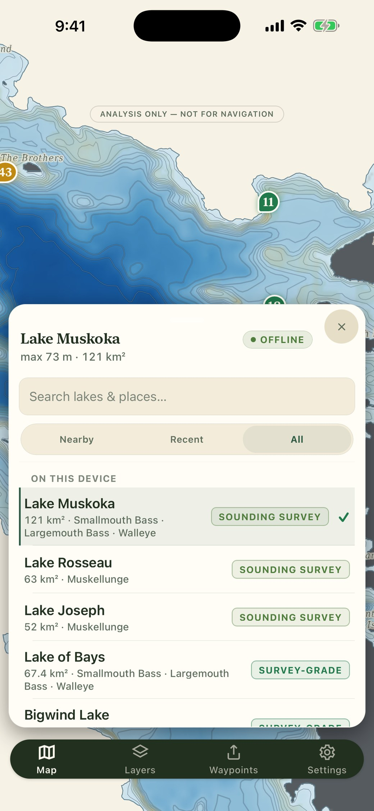
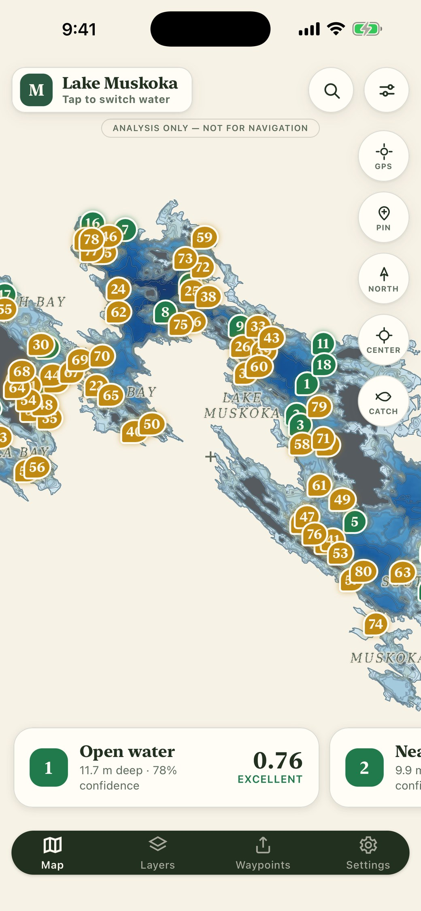
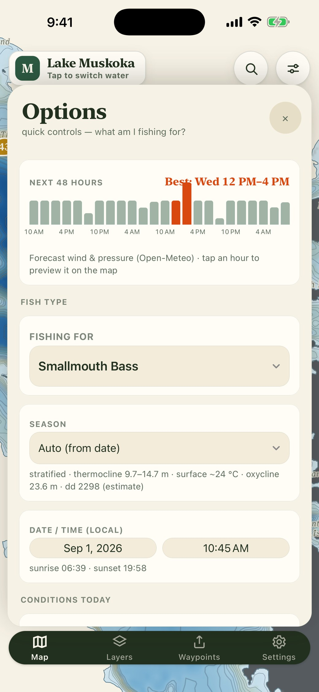
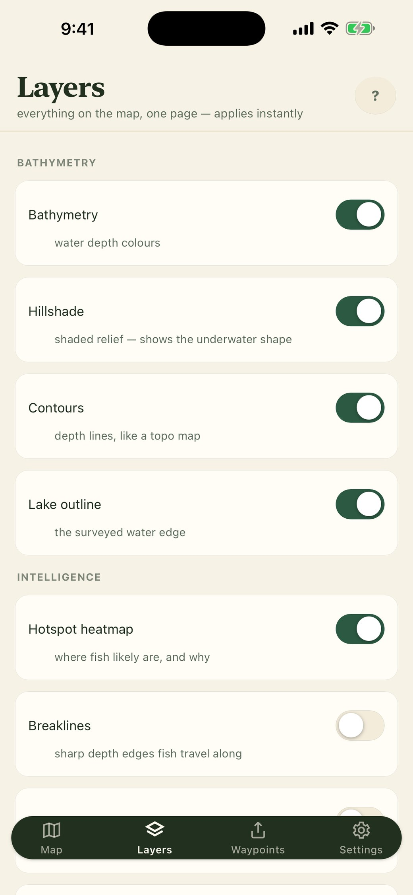
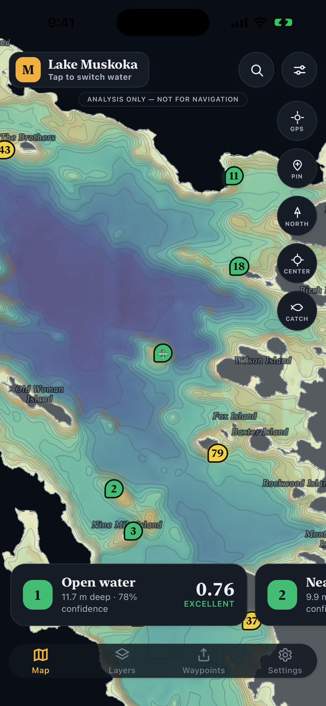

Anglers Edge scores every part of the lake for your species and today's conditions, ranks the best spots, and explains each one. Offline. No account. Free.
Depth charts leave the hard part to you: reading structure, wind, season and temperature together to decide where fish hold today. Anglers Edge does that reading — and then shows its work.
An eleven-factor model rates every square of the lake for your species, season, date, wind and pressure, then ranks the best spots.
Tap any spot for a plain-language breakdown: which factors drove the score and by how much. No black box, ever.
Maps, structure layers and the model ship inside the app. Zero signal, zero problem — it runs entirely on your phone.
Each factor is weighted for the species and the season. Hard rules come first: unsurveyed water scores zero rather than guessing, and water below the oxygen limit is out.


Bad data costs you a day on the water. So the app never pretends.
You've seen what happens when a fishing app locks the good stuff behind a monthly fee. We're not doing that — and we've written it down.
| Anglers Edge | Fishbrain | Navionics | onX Fish | |
|---|---|---|---|---|
| Scores spots with a model | Yes | Paid tier | No | No |
| Explains why | Yes | No | No | No |
| Works fully offline | Yes | No | Paid tier | Yes |
| Canadian lakes | Yes | Partial | Yes | No |
| No account required | Yes | No | No | No |
| Core features free | Yes | No | No | No |
| Price | Free · 99¢ a lake | $10–13 / month | ~$50 / year | $35 / year |




Every lake ships with detailed bathymetry, structure layers and its own calibrated scoring model — from Muskoka and the Kawarthas to Temagami and the Northwest. Packs for the rest of Canada and the United States are in development.
Don't see your lake? Request it from inside the app — requests drive what we build next.
Yes. The lake maps, structure layers and the scoring model are all inside the app. The only things that need a connection are optional live weather and the 48-hour forecast — and the app tells you plainly when they're unavailable.
19 Ontario lakes are built in, with 23 more downloadable today — 42 in all, from Muskoka to Temagami — and packs are being built for the rest of Canada and the United States. Missing yours? Request it from inside the app.
No. Anglers Edge is an analysis tool. It never routes you anywhere and the source bathymetry is not navigation-grade. Carry official charts.
Nothing. There's no account. Your location is used on your phone to show your position on the map and never leaves it. Waypoints and catches are stored on the device.
No. Nothing that is free today will ever move behind a paywall. Edge Pro only ever adds things that didn't exist before.
Free on the App Store. No account, no card, no catch.
Download on theApp Store